Control Circuit 2026 › Tutorial › Chapter 10
The Publisher Tools are the licensed output features of Control Circuit. The Evaluation and Home versions do not expose them, nor give access to their dialogs and settings. For that reason this chapter goes through the settings, so that you know what to expect and what options are available.
The Publisher Tools provide four extra features:
Let’s recap for a moment. Control Circuit uses three layers for every Sheet. They are Schematic, Annotation and Rubber Stamp, and they are rendered in that order.
On the Schematic layer all our actual electrical circuit design takes place. The various engines evaluate all the components, wires, nodes and data on this layer for the purpose of our engineering.
The Annotation layer provides a surface for all manner of optional images, text, call-outs and such. Perhaps assembly notes, “gotchas”, or observations that you want your internal crew to be aware of but not necessarily your customer, which is why this layer can be shown or hidden.
Annotation serves another unique purpose: Forms. Forms, such as the Bill of Materials, Component Lists and the Sheet Index (tabulated structures that are filled in by the Control Circuit engines) are only allowed on this layer.
Sheet 0 is our universal, project wide Rubber Stamp layer. On it we put anything that needs to be stamped atop every Sheet: perhaps an angled “Draft Only” or “Confidential” text, a brand image, or even a block to obscure part of every Sheet. The Rubber Stamp layer can also be shown or hidden.
Where these layers come into their element is in the printed and published outputs. At that point we choose what gets shown or hidden, and what data gets included or excluded, so we have granular control of who gets what depending on the target audience.
With that, let’s dive in with a real working example.
We have already seen how to create circuits on the Schematic layer, so we will not dwell here.
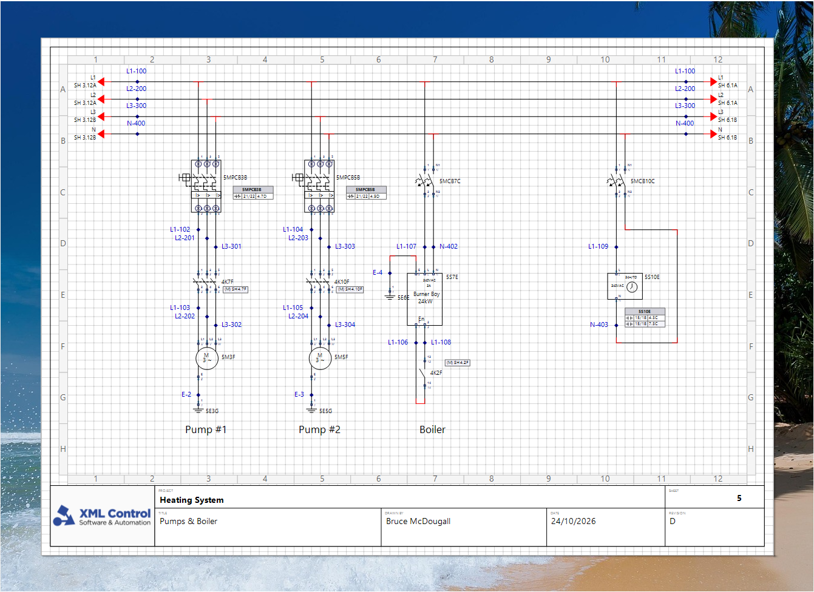
Switch to the Annotation layer, then we will add some content: say, some component images and some notes.
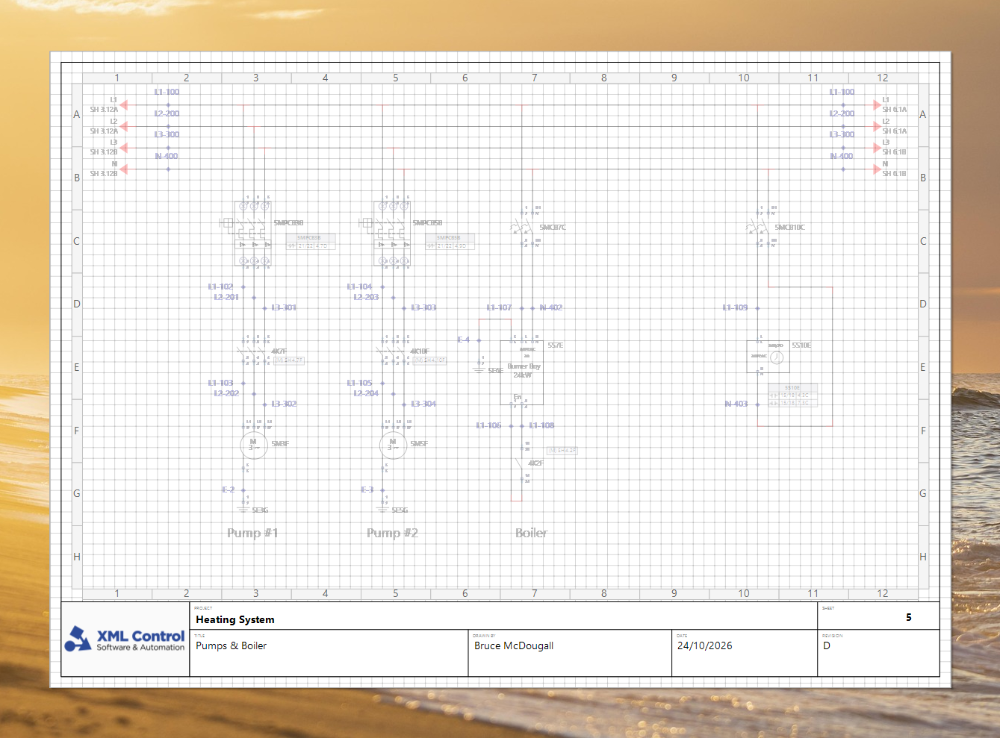
Firstly though, did you see the background change and the schematic blur? That is a feature, provided to give a ready visual clue as to which layer you are on. You can set background colours or images as you prefer. Choose Tools › Personalize Workspace to set this up.
Now that we are on this layer, add some content.
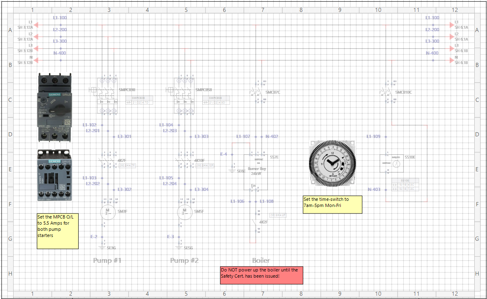
Save the Sheet, then press and hold F4 to see how both layers look together in preview.
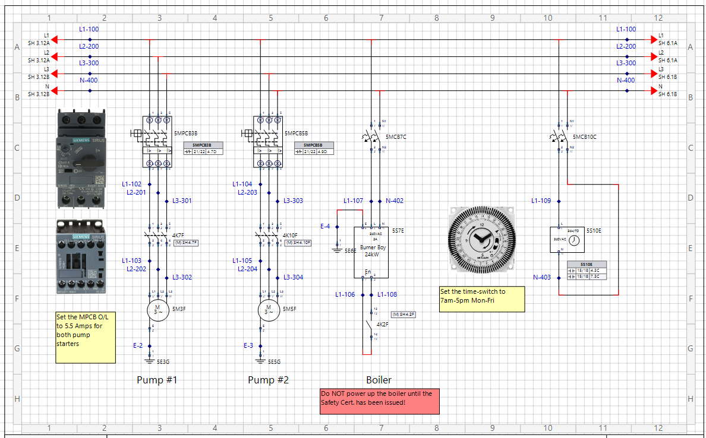
At the root of the Project Explorer is the built in Sheet 0, the Rubber Stamp Sheet. Double-click it to open. Again, the background colour comes from Personalize Workspace and could be an image if you wish.
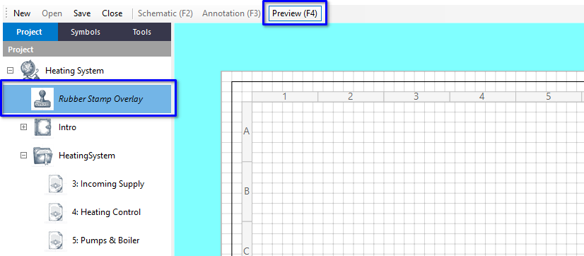
You might notice it defaults to Preview (F4), as neither the Schematic nor the Annotation layer options are valid on this Sheet.
Add a text object and configure it to something useful, like “Draft”.
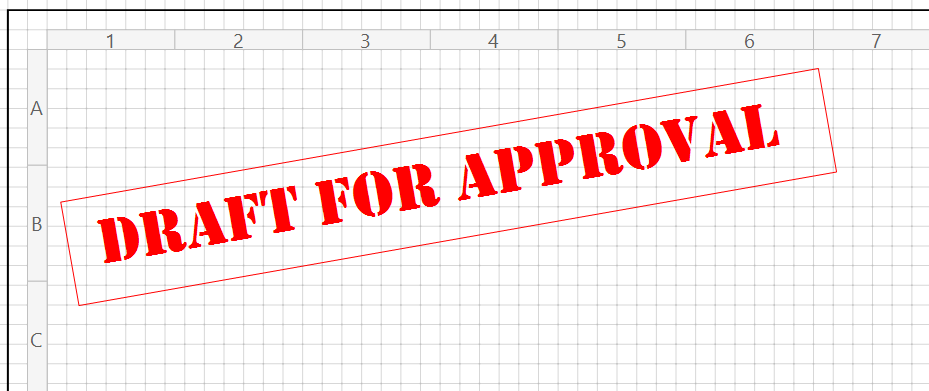
Now we have some Rubber Stamp content, let’s see how to display it while editing. Switch back to a Schematic Sheet, then from the View menu check Rubber Stamp Layer.
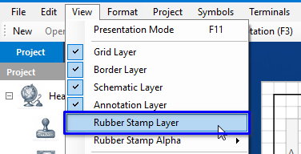
The default opacity is 40%. Adjust it with View › Rubber Stamp Alpha, where a lower value means more transparency for every text, primitive and object rendered from the Rubber Stamp layer.
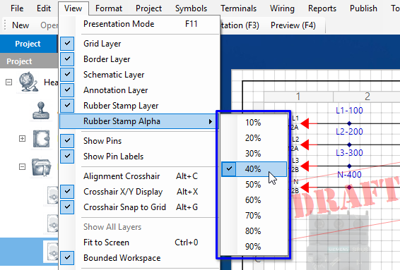
Here it is rendered at 40%.
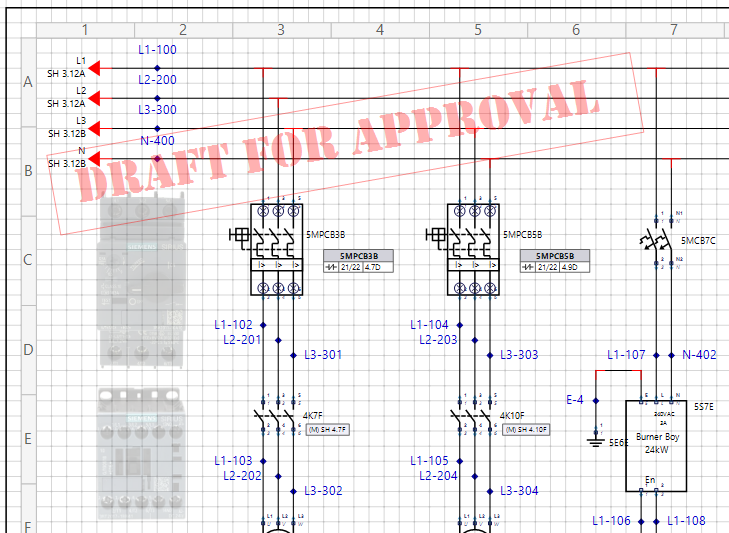
So, we have enough layer content to progress with. We will start with Print Preview.
Print Preview is built into every version of Control Circuit from Evaluation upwards. It gives us a baseline for regular, day to day output.
Choose File › Page Setup… (Ctrl+Alt+P). This is a regular printing dialog, but be aware of the need to tick Rubber Stamp in the Layer Selection for it to be included.
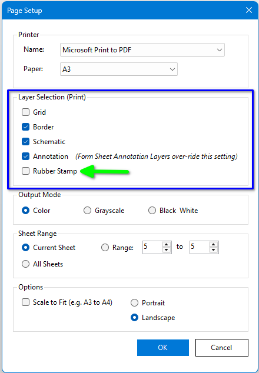
For a finished pre-print review choose File › Print Preview… (Ctrl+Shift+P).
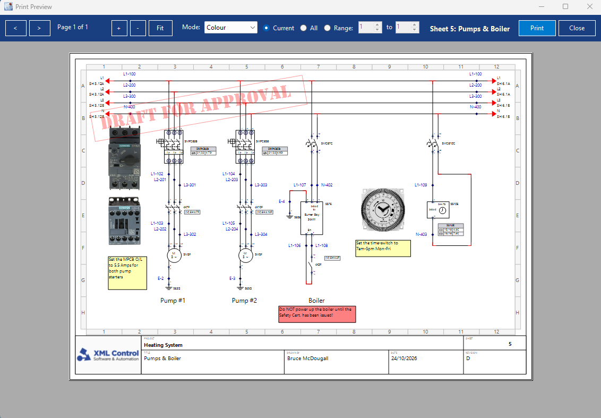
The Print Preview supports regular zoom in and out, and grab to pan gestures. From here we can print to a printer, or more usually to a PDF. That will be a regular PDF though, with no smart features like jump links or data pop-ups. Hence the option of Smart PDF Export, which we come to later.
The Web Portal is the flagship output renderer included with a Pro licence of Control Circuit. It can produce a fully standalone HTML web page or, for larger projects, a full web site, of a single Sheet or the entire circuit.
Once in this format we have all the power of HTML5, CSS and JavaScript to leverage jump links, display options and colour rendering options, deep cross-Sheet search, data display panels and much more. The premium feature is full Markup Mode, where we can toss our traditional highlighter pens out and use “virtual pens” to mark off the circuit as it is assembled and wired in the shop.
To get started choose Publish › Web Publisher…
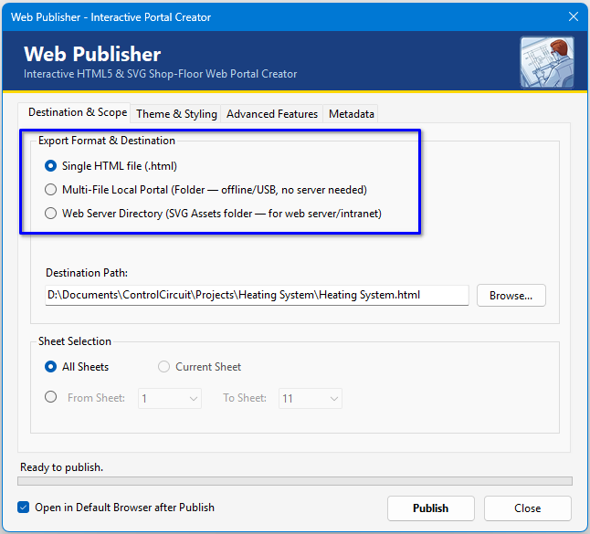
The most important section on the Destination & Scope tab is the Export Format. There are three:
Essentially all outputs are constructed the same way, but web browsers have limits. Some readily crash if a single HTML file with all its assets is over, say, 100 MB. For this reason, depending on your project size, the Web Publisher will very robustly compel you to change output format at times. It is also a choice on your side, depending on the environment you want to publish to.
For an example of a 400+ Sheet project, here is the warning.
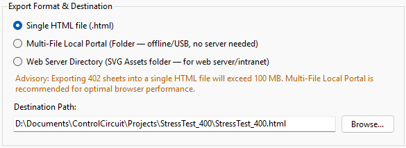
Without further ado, press Publish and let’s see what we get out of the box. You should get a confirmation of completion quickly.
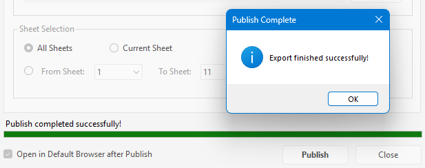
Your default browser should open. We clicked in the navigation bar to the Sheet we have been working on; otherwise it starts at Sheet 1.
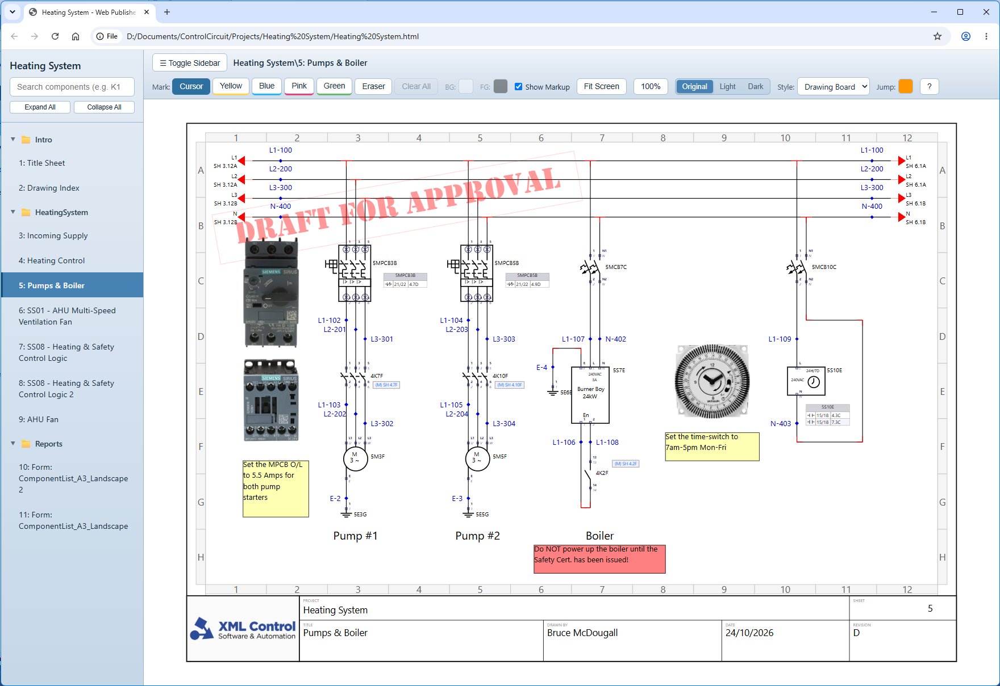
For a local help guide, tap the ? at the top right end of the tool bar.
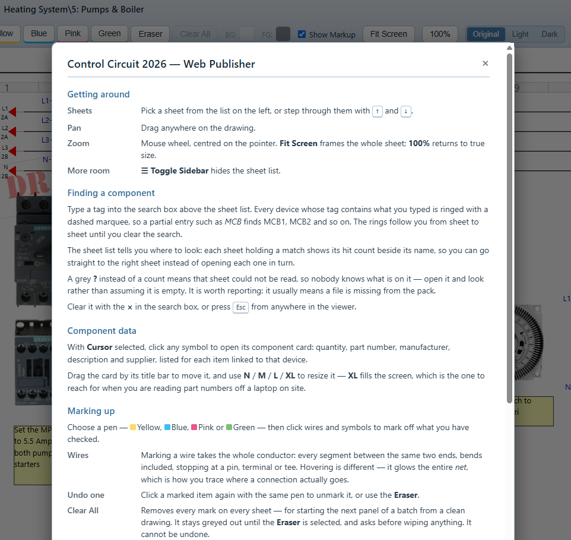
It is very comprehensive, and covers all the tools and their functions.
Regardless of project size, the Search Bar will find matches and partial matches in every Sheet. For example:
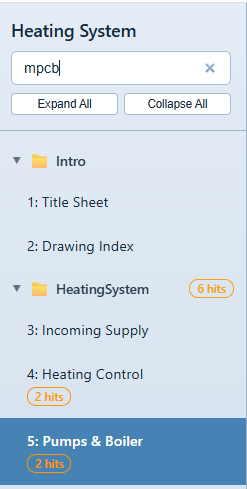
Also, all Interruption Nodes, Contact Tables and cross references are live. Click on any of them and a target reticle will be displayed. If the target is on another Sheet you will be transported there first.
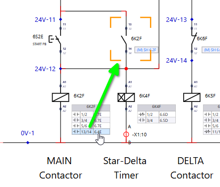
If you browse to Sheets which have a search target, marching ants are displayed around those targets.
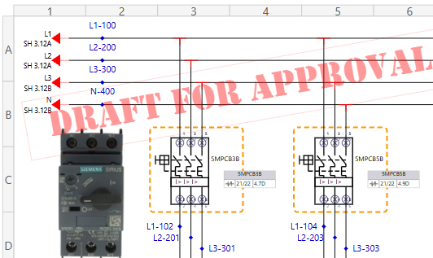
Once you have selected a marker pen you can start to mark off your circuit. This markup data is stored in the local browser.
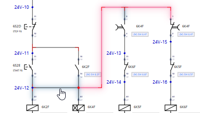
At any time you can switch markers. Perhaps another team member is picking up the work, perhaps to denote a new session, or for rework and billing.
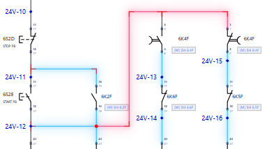
Until now we have been looking at the render in Original mode.
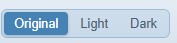
Let’s try Dark mode.
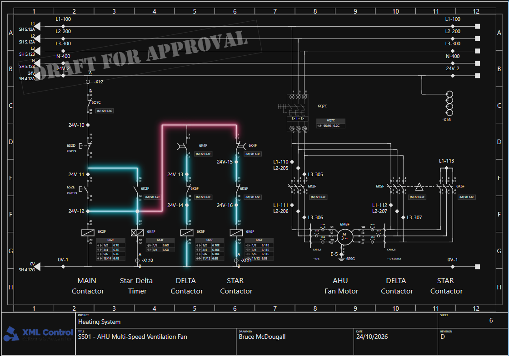
As we used the default settings, images render well but have no theme compliance. Below is the default output for images in Dark mode, for example.
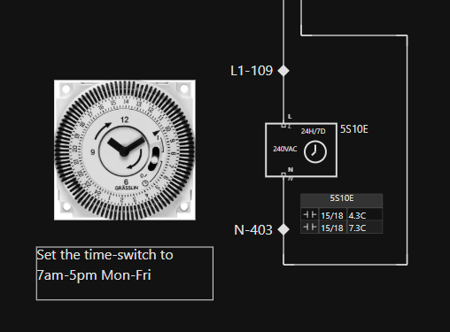
Instead, on the Theme & Styling tab we can choose to set all images to Grayscale, or even transform them all to “duo-tone” with Tinted to theme colors, using the Dark and Light theme foreground and background colours we set.
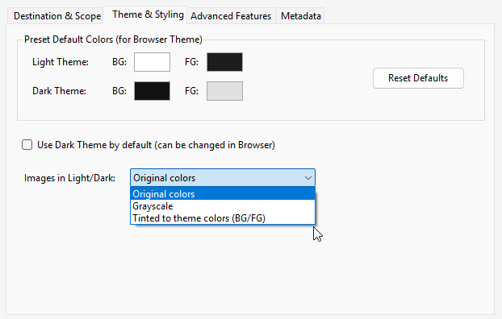
With these settings:
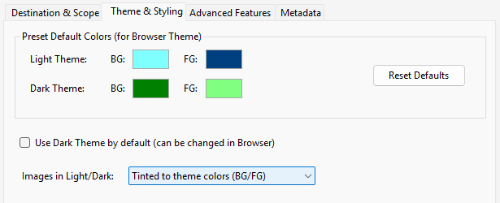
We then get this in Light mode…
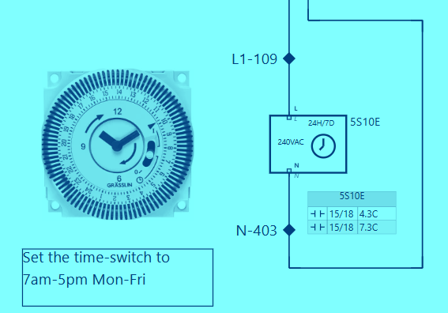
…and this in Dark mode.
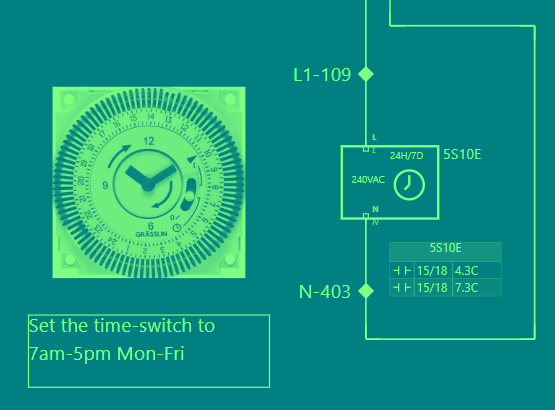
If you included the component BOM data in the publisher output, a single click on a Tag pops up the component data for the selected symbol, if it has any attached. If it has none, the message says so.
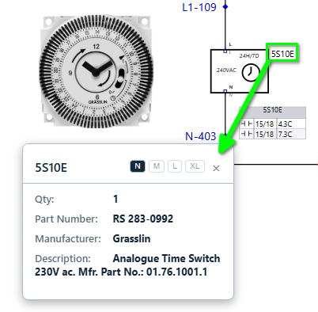
Use the N (Normal, as shown) to XL size buttons on the pop-up to enlarge it, right up to a full screen display that can be read across the room.
On the Advanced Features tab we have some useful options that let us select what gets rendered, depending on the target audience.
A significant option is Clear Browser Markup storage on first load. Whilst markup can be cleared in the browser with the button provided (shown when the Eraser tool is selected), this option lets you force that clearance, taking away any reliance on the shop floor guys. It has multiple uses, including the issue of a revised circuit that needs to be started from scratch.
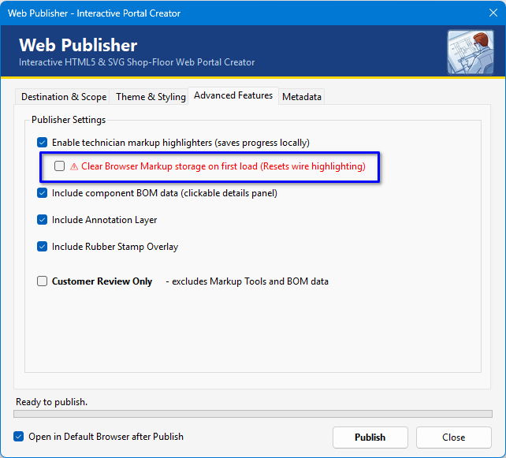
The second significant option is Customer Review Only. Ever lost a job because you sent too much detail? Reduce the doubt with this feature. It unticks and disables the technician markup highlighters and the component BOM data, so neither reaches the customer.
Finally, the Metadata tab lets you embed information in the published portal, either as an HTML comment or as a JSON block. Type your own text and use tags such as {project}, {revision} or {field:Name} to have details filled in automatically when you publish. The tags {timestamp}, {author} and {date} are there too, and any tag the Publisher does not recognise is left as typed. The text can be up to 4,000 characters.
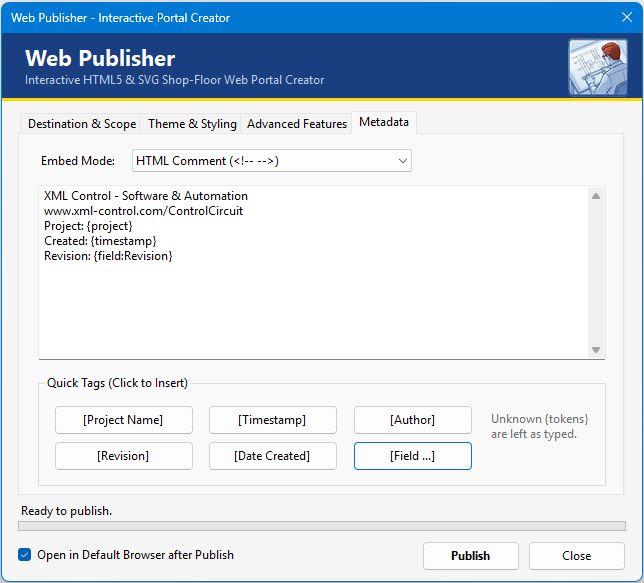
The method is to write your text, then tap one of the Quick Tags buttons to insert the relevant tag. Once published, right-click the page in the web browser and choose View Page Source (or similar) to see it.
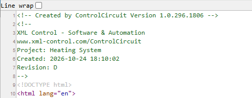
Web pages can contain hidden instructions as well as visible text. A malicious drawing could try to sneak those instructions in through something as ordinary as a label or a Sheet title. The Web Publisher converts the text from your drawing into harmless plain text before it goes into the page, so your browser shows it and never obeys it.
We do not just assume that works. Our automated tests play the attacker: they fill every text field in a project with deliberately hostile content, publish it, and check that the structure of the finished page is exactly what a clean project would produce, with nothing smuggled in. If a new text field is added to the software later, the tests attack it automatically.
The Smart PDF Export tool takes your circuit to the next level in PDF terms, with jump links and component data pop-ups. It includes pretty much the prime features of the Web Portal, but within the limits and format of PDF viewers.
To get started choose Publish › Smart PDF Export…
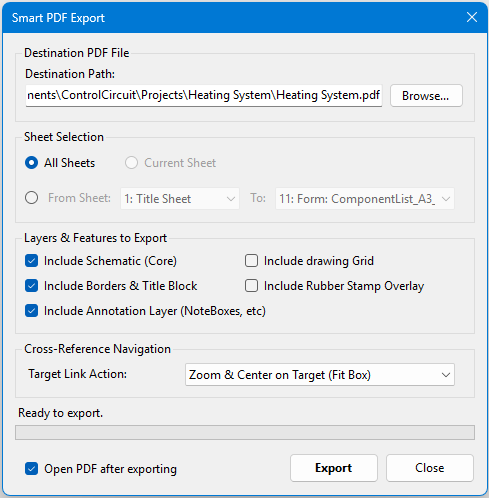
There are far fewer options to choose from here, as the PDF format itself drives the output. Select the layers as required, including Rubber Stamp.
The Cross-Reference Navigation (jump links) are not the most elegant thing in the world, a limitation of PDF, so experiment and see what works best for your needs.
Once you press Export you should get a confirmation.
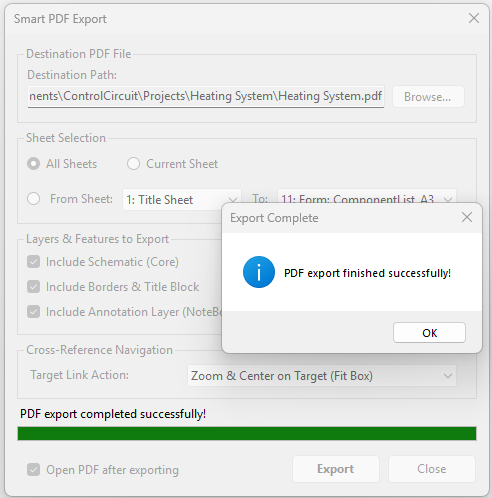
Then your default viewer should open and display the result.
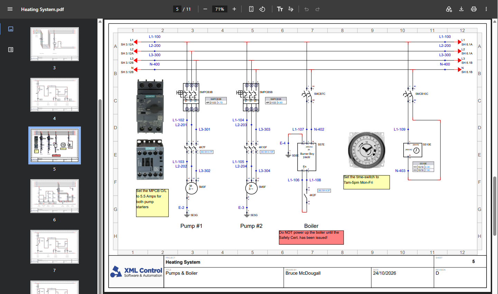
If you click on a Tag which has component data you should get a pop-up listing that information.
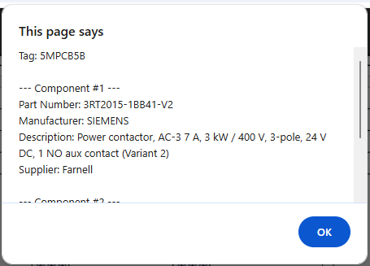
As we all know, there is a Bob in the future who will welcome discovering an electrical circuit in DXF format that he can open and modify with basic tools, to add some relay or lamp! Control Circuit provides the DXF Portfolio to output the Sheets into raw DXF format, as single files in a folder. There is no smartness here, just pure primitives in a file.
To get started choose Publish › DXF Portfolio…
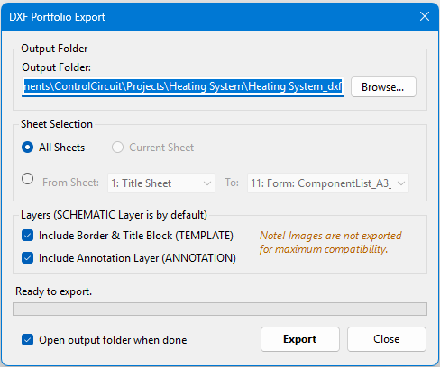
The options should be self-explanatory. The Schematic layer is always exported, and the Border and Annotation layers are your choice. There is no Rubber Stamp option because the stamp is not part of any one Sheet, it is the project wide Sheet 0 that other outputs overlay on each page, and the Portfolio is a plain set of drawings, one per Sheet.
Tap Export when you are done.
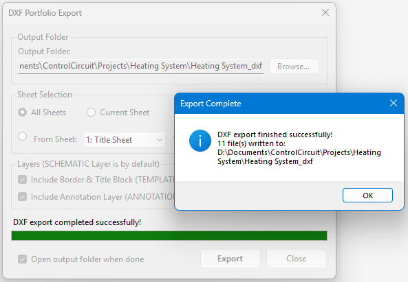
Windows Explorer will then open to show the DXF files produced.
We have covered the essentials of the Publisher Tools. In the next chapter we look at the remaining Pro licence feature, the Symbol Library PDF Export.